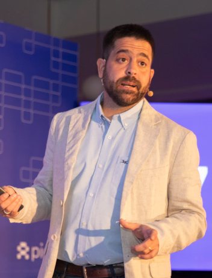
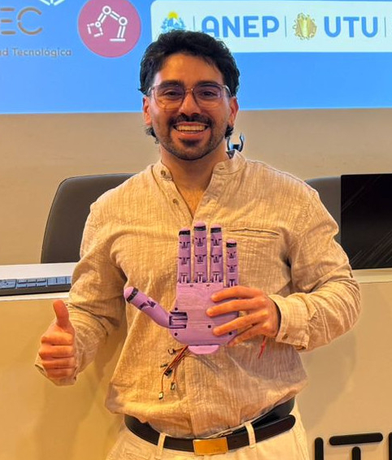
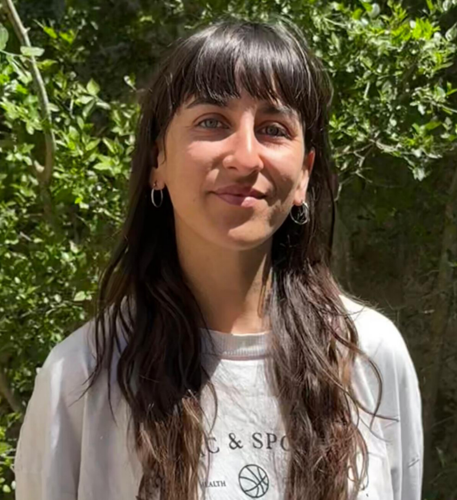
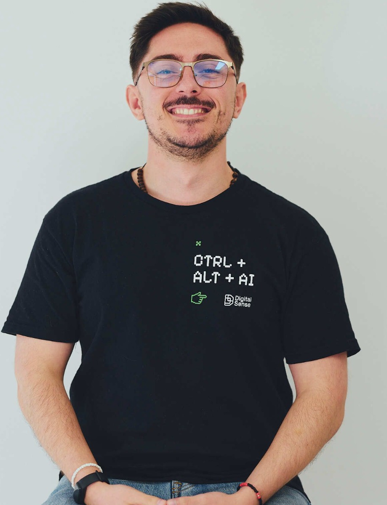
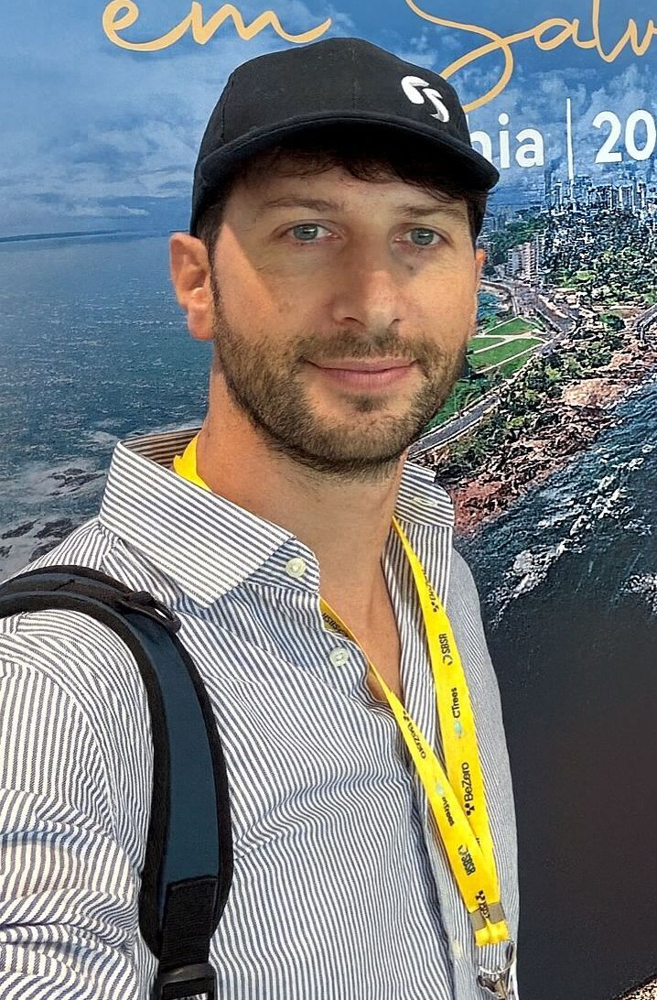
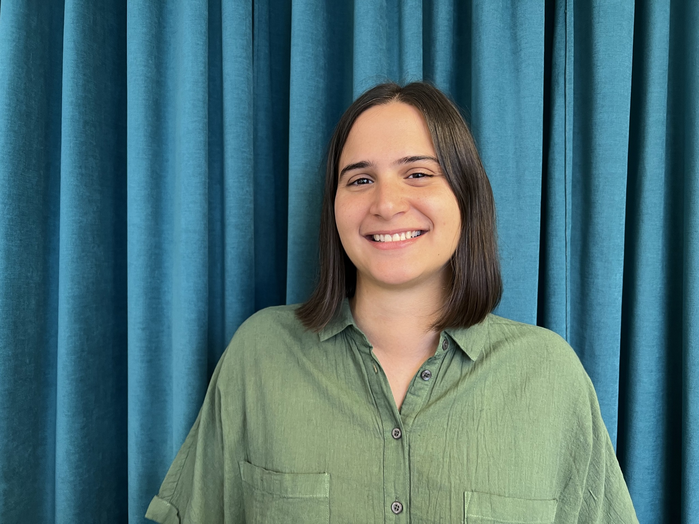
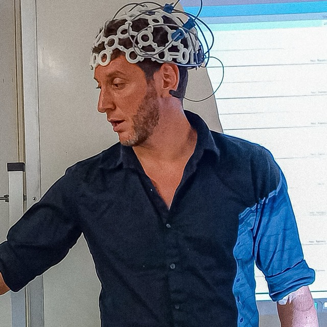

Galería
Reviví los mejores momentos
La primera edición de ConnectIA fue un éxito rotundo. Más de 300 asistentes, speakers de primer nivel y conexiones que perduran.
.jpg)
.jpg)
.jpg)
.jpg)
.jpg)
.jpg)
La primera edición de ConnectIA fue un éxito rotundo. Más de 300 asistentes, speakers de primer nivel y conexiones que perduran.
Un recorrido por las voces, ideas y conversaciones que hicieron crecer a ConnectIA en cada edición.
La segunda edición reunió charlas técnicas, paneles y casos de uso aplicados en IA.

Panel IA y trabajo humano: ¿nos reemplaza o nos ayuda?
Conversación sobre cómo la IA está transformando el trabajo, con ejemplos reales donde potenció resultados o generó desafíos, y una mirada hacia un futuro más colaborativo.
Desafíos de la puesta en producción: del concepto al producto en IA
Los desafíos reales de convertir conceptos en productos: calidad de datos, escalabilidad, costos y equilibrio entre expectativas y viabilidad técnica.

Mano robótica inteligente para emulación de agarres
Prototipo de mano robótica que integra ML y robótica para emular agarres funcionales, combinando segmentación de imágenes, clasificación y simulación en ROS2.
Graph Neural Networks para recomendaciones
Introducción a las GNNs y su aplicación en sistemas de recomendación multi-modales, procesando datos heterogéneos en formato de grafo para mejorar personalización.

IA en el diagnóstico por imágenes médicas
Impacto actual y futuro de la IA en diagnóstico médico por imágenes en Uruguay, abordando precisión, privacidad de datos y marcos éticos.

Predicción genómica: métodos, resultados y desafíos actuales
Desde métodos clásicos como GBLUP hasta enfoques modernos con deep learning y Transformers, explorando la integración genómica-ambiental en maíz.
AI Future: Cómo preparar tu empresa para la IA
Estrategias para integrar IA de forma efectiva en empresas, abordando adopción en procesos internos, cambios culturales y tendencias futuras.
Los desafíos de modelar "¿cuándo llegará mi pedido?"
Modelo probabilístico basado en NGBoost y redes neuronales con natural gradients para predecir tiempos de entrega precisos en marketplaces.

IA como potenciador de la Agricultura
Casos reales de IA desarrollada en Uruguay para agricultura en la región: predicción de rendimientos, detección automática de uso de suelo y automatización.
Seguimiento Automatizado de Peces para una Pesca Sostenible
Solución integral con cámaras, Edge computing y ML para detectar y contabilizar capturas en tiempo real, generando reportes de actividad pesquera.

IA generativa en la evaluación educativa
Herramientas de Ceibal con IA generativa para facilitar corrección de tareas, optimizando tiempo docente y brindando retroalimentación personalizada.
Análisis de Privacidad en Modelos de Lenguaje
Ataques de privacidad en modelos de lenguaje, técnicas de mitigación y avances en privacidad diferencial para sistemas de IA responsable.
La primera edición reunió referentes de la industria, academia y comunidad técnica en Uruguay.
Evaluando soluciones basadas en LLM
Metodologías y métricas para evaluar efectivamente sistemas basados en modelos de lenguaje grande.
Ver charla
De Uruguay al Mundo
Aplicaciones de IA para el sector productivo y el estado, mostrando casos de éxito uruguayos.
Ver charla
Modelo de ranking online
Diseño de modelo de ranking online de baja latencia para sistemas de recomendación.
Ver charla
DCO: Creación de creatives con IA
Cómo la IA generativa está revolucionando la creación de contenido publicitario digital.
Ver charla
Interfaces Cerebro Computadora
La convergencia entre neurociencia e inteligencia artificial para crear interfaces innovadoras.
Ver charlaIAG: Transformando empresas
Cómo la IA Generativa está transformando nuestra empresa y la de nuestros clientes.
Ver charlaNuevas tecnologías como aliadas
Empoderando a mi hija con diabetes tipo 1 a través de la tecnología.
Ver charlaAI Systems y LLMs
Aplicación de LLMs más allá de chatbots en sistemas de inteligencia artificial.
Ver charlaTraducción automática guaraní-español
Data augmentation para mejorar la traducción automática de lenguas indígenas.
Ver charlaPanel IA Segura
Discussión sobre los retos y oportunidades de la Inteligencia Artificial Segura.
Ver charlaDCO: Creación de creatives con IA
Innovación en la creación de contenido publicitario usando inteligencia artificial generativa.
Ver charla
IAG: Transformando empresas
Estrategias de implementación de IA Generativa en entornos empresariales.
Ver charla
Soluciones end-to-end de IA
Experiencias en el desarrollo de soluciones completas de inteligencia artificial.
Ver charlaPanel IA Segura
Perspectivas sobre seguridad y ética en sistemas de inteligencia artificial.
Ver charla
Panel IA Segura
Investigación académica sobre los desafíos de la inteligencia artificial responsable.
Ver charlaTraducción automática guaraní-español
Técnicas avanzadas de data augmentation para lenguas con recursos limitados.
Ver charla
